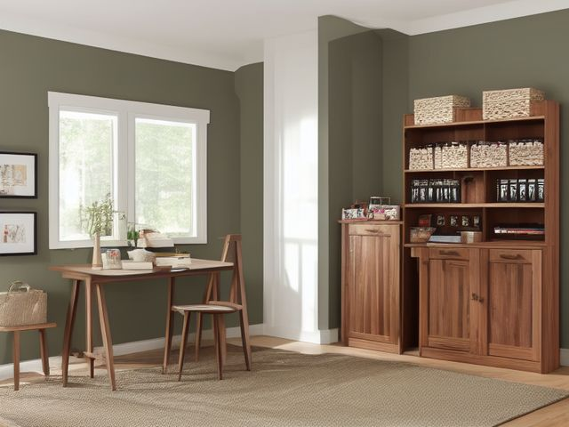

Home Office micro zone
The Supply Cabinet
Hold the consumables this office genuinely burns through in a year, and no more.
One session: 45-75 min. most of it in Sort, and the counting is the part that does the work

What done looks like
One open pack of each consumable at hand height with its backstock directly behind it, reams of paper on the bottom shelf, min and max written on a card at the front edge of each shelf, and a step stool standing in the corner of the room.
Check these before you start
- FallReaching the top shelf from a rolling office chair. The chair moves under you the moment you shift your weight, so bring a step stool into this room and keep it here.
- Fall, cut, or crushReams of paper and boxes of envelopes stored above shoulder height, where a slipping box lands on your head and shoulders while your arms are up.
The six passes, in order
Work them in this order. Sorting after you have arranged things means arranging things you were about to remove.
Sort
Decide what stays. Everything else leaves the zone now.
Bring everything out and line it up on the floor in categories so you can see the true count, because a dozen packs of sticky notes look like nothing until they stand side by side. Dried glue sticks, dead markers, cracked folders, and adapters nobody can identify leave.
Straighten
Give what stays a home, placed where the hand actually reaches.
One open pack of each consumable at hand height, its backstock immediately behind it on the same shelf, so restocking the pen tray is a single reach rather than a hunt through three boxes of envelopes.
Shine
Clean it, and use the cleaning to inspect what you cannot see when it is full.
Wipe the shelves and check for a pen that has leaked, a split toner pouch, or the sticky ring under a roll of tape that has gone soft.
Safety
Make the zone safe for everybody who uses it, including the shortest person.
Reams of paper and boxes of envelopes are heavy and they belong on the bottom shelf, not overhead. Put an actual step stool in this room and stop standing on the rolling chair to reach the top shelf.
Standardize
Write down the best way you know today, so it survives you forgetting.
Write min and max on a card at the front edge of each shelf, so a low stock is visible from the doorway and anyone in the house can read the cabinet without asking you.
Sustain
Attach the reset to something that already happens, so it keeps itself.
When you open the last pack of something, it goes onto the household shopping list on the fridge before you break the seal, not after it runs out.
The deal you got
The bulk box of 500 envelopes, the multipack of sticky notes, the case of paper bought because the price was good. The genuinely hard part is that you were not wrong about the price, and admitting the surplus was a mistake feels like throwing money away twice. It is not: the money left when you bought it, and the shelf space is being paid for now. Count the true stock and divide it by your honest annual use, out loud. Six letters a year against 500 envelopes is a lifetime supply and then some. Cap it at one open plus one spare of anything you use monthly, and a single year of use for everything else. The surplus goes to a school, a charity shop, or a neighbour this week. Not to the top shelf, and not to a box in the garage.
Cleaning it properly
A supply cabinet cleans fast, so the real work is looking while you wipe: the leaked pen, the split glue tube, the sticky ring under a soft roll of tape. Catch the seep before it spreads across the shelf.
Inspect as you clean. Cleaning is the only time you see the zone empty, so use it.
- As you clear each shelf, flag a pen that has leaked, a marker that has wept, or a glue tube that has split, so the mess is caught before it spreads.
- Look under rolls of tape and bottles for a sticky ring, and note the item that is going soft or seeping.
- Sight along each loaded shelf and flag a board that bows or a shelf pin that has slipped under the weight of the paper.
- Check the step stool as you wipe it and flag a wobbly leg, a loose step, or a worn foot before someone stands on it.
The standard that keeps it fixed
One open plus one spare of anything used monthly, with min and max written on a card at the front of every shelf.
Reset trigger. When you open the last pack of something.
Next in this room
- The Printer and Scanning Station, the zone before this one
- All 6 micro zones in the Home Office
Related reading
- What is 6S?
- This zone's safety pass, in full
- Is one spot in this zone always the one you skip?
- Why this zone gets messy again
- Decluttering vs. organizing
- Before you buy storage for this zone
- Still does not fit, even after the honest count?
- Does something in this zone actually get used somewhere else?
- Stuck on one item in this zone?
- Written the standard, but nobody else follows it?
- Does everyone in the house agree what "done" looks like here?
- Does more than one person use this zone?
- Found a duplicate of something in this zone?
- Why the standard above names one home per category
- Is the everyday item in this zone actually the easy one to reach?
- Not sure whether to keep something in this zone?
- Does this zone keep running out of something?
- Started this zone and stalled partway through?
When you want it off the screen
Carry The Supply Cabinet into the room
The method above is complete and free. The Whole House Print Pack puts The Supply Cabinet and the other 113 micro zones on 684 printable cards, so the steps you just read are not stuck behind a phone screen while your hands are full.
The Print Pack, 19 dollarsJust this zone, 4 dollarsOr draw a card free
The Supply Cabinet on its own is 4 dollars for 6 cards. All 114 micro zones is 19 dollars for 684. The whole house is the better buy; the single zone is here so you can take only what you are working on.
If The Supply Cabinet keeps fighting back, the real problem usually sits somewhere else in the room. A one hour virtual consult is 250 dollars: we find the function, the friction and the root cause together, and you keep a written standard for the space. See what a consult covers.